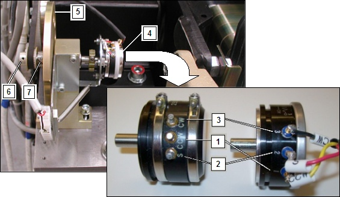

| NOTE: | There are two different types of Tilt Potentiometers. Type 1 is the original and Type 2 has been introduced as a replacement for Type 1. The difference between the two pot types is the physical location of the Wiper Terminal identified on the Type 1 pot as "S" and on the Type 2 pot as "2". In both configurations the cable labeling for each terminal has been changed to indicate both identifiers for each terminal connection to either pot type directly on the cable label. Verify the replacement type during its installation prior to making the adjustment to the tilt pot. |
Illustration 2: Tilt Pot Location Side View

Tilt Pot Type 1 (orginal) Shown on Left, Type 2 (replacement) Shown on Right.